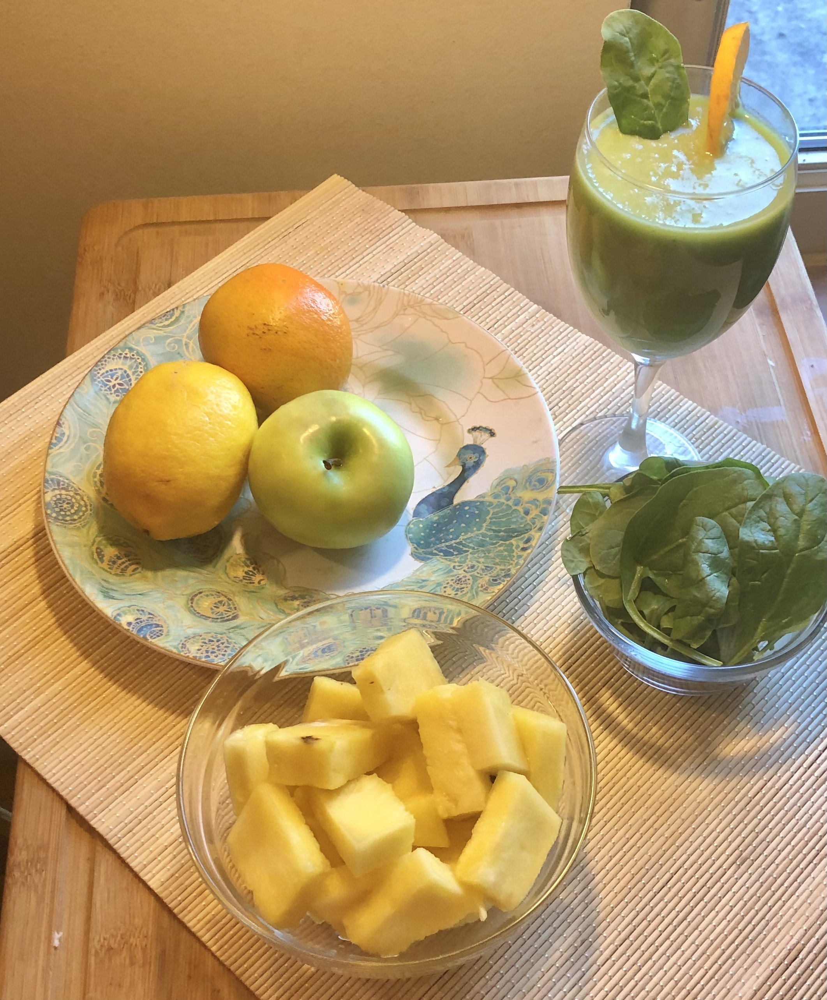

Recipe submitted by Fatimah
Vegan
Easy
15 mins
1-2 Servings
Description: Basic formula/process for Smoothies. Making a fruit smoothie is as simple as tossing ingredients in a blender, but for as with most things for consistency try these, basic step by step process.
Ingredients
-
Living Green Smoothie
- 1 cup unsweetened non dairy milk (nut milk makes a creamier smoothie, but water or orange juice will do as well)
- 1 cup greens (baby spinach, destemmed baby kale,, chard, etc.) you can use the stems in your soup or stews
- 1 small banana
- 1 cup of pineapple
- 1/2 of med lemon (peeled)
- 1/2 small green apple
- Sweetener to taste
Additional Information
- Sweetener — Honey, maple syrup or dates. The sweetness of each piece of fruit will always vary, so if you’re going to add sweetener it’s best to wait until after blending and tasting as to not over sweeten your smoothie.
- Chilled — If you want your smoothie chilled you can use frozen fruit, so you don’t have to dilute it with ice!
- No bananas — if you prefer no bananas in your smoothie, you can use 1/2 avocado, 1/2 cup of non-dairy yogurt or even tofu to replace the banana and still have the consistency.
- Remember to do everything with a balance. When preparing our meals, It’s great to start out with knowing what our nutritional needs are. So, what is out of balance, and what is actually needed to bring it back into balance.
Directions
- Liquid - pour liquid in blender Unsweetened milk, juice or water—Use whatever non dairy milk you. Any of them will work!
- Leafy greens — Add in any fibrous foods. If you are adding in spinach or other greens, this is the time to toss them in. If you are just beginning to use greens in your smoothies, you might want to start with fresh baby spinach because you can’t taste it at all. If you’re a little more hardcore on the health food front, you can try kale, collards, or even chard!
- Frozen fruit — Add in your frozen fruits and vegetables. Craft your favorite combination of fruit to get the desires flavor. Mixed berries, mango and pineapple for a tropical flavor etc.
- Fresh fruit — Add any fresh fruits or veggies you’d like to use.
- Banana - This will give the smoothie a thicker, smoother texture, and naturally sweeten the smoothie.
- Nutritional add-ons - If you want to take the nutritional value up a notch there are many options. (nuts seeds protein powder etc.)
- Blend well! It’s always good to start the blender on low and then slowly ramp up to full speed. This makes sure everything is mixed well and the blades don’t get stuck.
Stay Connected
We invite you to stay connected and learn more about our community. Sign up for our newsletters with plant-based recipes and events delivered to your email!